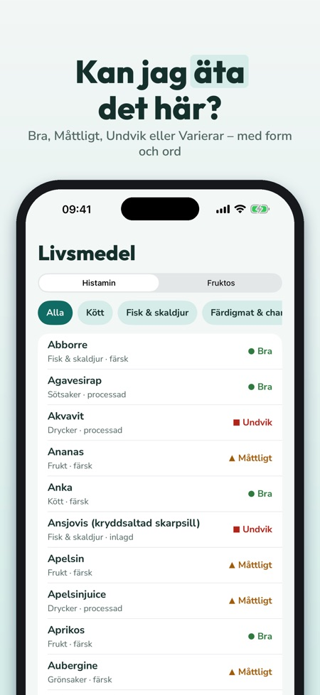
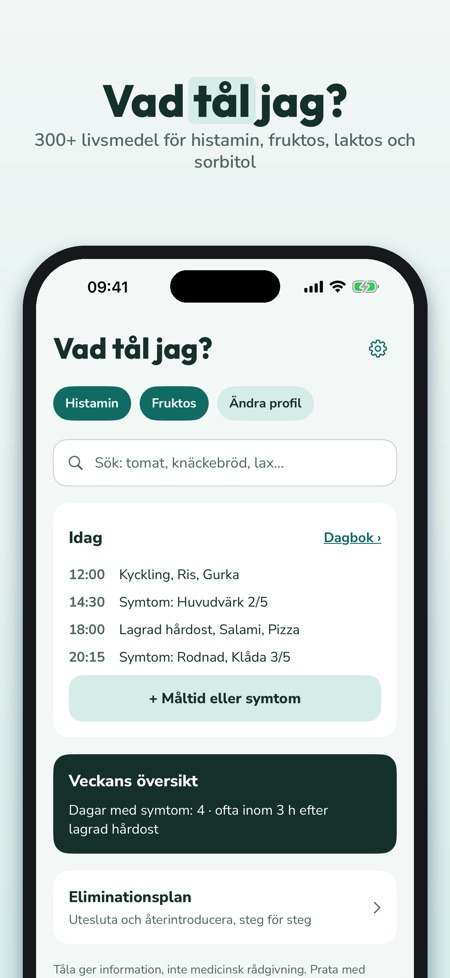
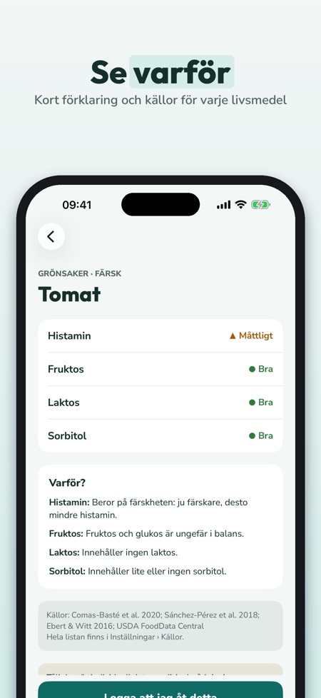

Tåla ger svaret på svenska för histamin, fruktos, laktos och sorbitol. Över 300 livsmedel med betyg, källor och en dagbok för måltider och symtom.



Histamin, fruktos, laktos och sorbitol. Fruktos, laktos och sorbitol hör till FODMAP-grupperna, men Tåla visar inga portionsvärden.
Över 300 livsmedel, bland annat nordisk mat, med betyg per intolerans och en kort förklaring.
Där källorna är oeniga står det Varierar. Källor finns till varje livsmedel.
Ja, du antecknar måltider och symtom med styrka 1–5. Veckoöversikten beskriver dina anteckningar och är ingen diagnos.
Ja, med faser för att utesluta och återintroducera, som du planerar med läkare eller dietist. Du kan också exportera dagbok och listor som PDF.
En intolerans, sök, 50 livsmedel med alla detaljer och 7 dagars dagbok.
Du väljer årsvis, med förnyelse automatiskt och uppsägning när som helst i App Store-inställningarna, eller livstid som engångsköp. Aktuellt pris ser du i App Store.
Nej. Tåla är en informationsapp och ställer inga diagnoser. Betygen är allmän vägledning och tålighet är individuell.
Kan jag äta det här? Tåla ger svaret på svenska – för histamin, fruktos, laktos och sorbitol.
Inget konto – allt sparas i telefonen. Fruktos, laktos och sorbitol hör till FODMAP-grupperna; Tåla visar inga portionsvärden.
LIVSMEDELSLISTA MED 300+ LIVSMEDEL
• Nordisk mat: knäckebröd, inlagd sill, gravlax, filmjölk, mesost, lingon, kålrot, lakrits och mycket mer
• Betyg per intolerans: Bra, Måttligt, Undvik eller Varierar – med färg, form och ord
• Varför? Kort förklaring, t.ex. lagrad, fermenterad eller mer fruktos än glukos
• Källor till varje livsmedel; där källorna är oeniga står det ”Varierar”
MIN PROFIL OCH SÖK
• Välj dina intoleranser – listan och sökningen visar det som gäller dig
• Sök med vardagliga ord och synonymer
MINA SÄKRA
• Spara det du tål och det du undviker
• ”Visa i butik”: stor lista att visa för servitören eller ta med i butiken
DAGBOK
• Anteckna måltider från listan eller fritt, och symtom med styrka 1–5
• Veckans översikt: symtom per dag och vad du oftast åt inom 3 timmar före – en beskrivning av dina anteckningar, ingen diagnos
ELIMINATIONSPLAN
• Utesluta, återintroducera, egen lista – faser du planerar med läkare eller dietist
• Logg för återintroduktion
30 EGNA RECEPT
• Nordiska vardagsrätter, filtrerade efter din profil
PDF TILL LÄKARE ELLER DIETIST
• Dagbok, säkra listor och logg som PDF via delningsmenyn
TÅLA PLUS
Utan köp: en intolerans, sök, 50 livsmedel med alla detaljer och 7 dagars dagbok. Tåla Plus öppnar alla intoleranser, hela listan, obegränsad dagbok, veckoöversikt, eliminationsplan, recept och PDF. Välj årsvis (de första 7 dagarna utan kostnad för nya prenumeranter, förnyas sedan automatiskt, säg upp när som helst i App Store-inställningarna) eller livstid (engångsköp).
VIKTIGT
Tåla är en informationsapp och ingen medicinteknisk produkt. Den ställer inga diagnoser och ersätter inte läkare eller dietist. Betygen är allmän vägledning och tålighet är individuell.
Dagboken och listorna sparas bara på din telefon. Inget konto.